Genocide in Darfur: Terms
Please scan the terms to find what you are looking for - they are not in order!
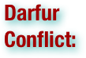
.pdf (. . . )


The Darfur Conflict was a guerrilla conflict or civil war centered on the Darfur region of Sudan. It began in February 2003 when the Sudan Liberation Movement/Army (SLM/A) and Justice and Equality Movement (JEM) groups in Darfur took up arms, accusing the Sudanese government of oppressing non-Arab Sudanese in favor of Sudanese Arabs. One side of the conflict was composed mainly of the official Sudanese military and police, and the Janjaweed, a Sudanesemilitia group recruited mostly from the Arab Abbala tribes of the northern Rizeigat region in Sudan; these tribes are mainly camel-herding nomads. The other combatants are made up of rebel groups, notably the SLM/A and the JEM, recruited primarily from the non-Arab Muslim Fur, Zaghawa, and Masalit ethnic groups. Although the Sudanese government publicly denies that it supports the Janjaweed, it has been providing financial assistance and weapons to the militia and has been organizing joint attacks targeting civilians. The Sudanese government uses oil revenues to fund a military capacity that is in turn, used to conduct war in Darfur. Oil revenues collected from companies around the world fund the civil war as well as violations of international human rights and humanitarian law. Sudan’s oil wealth has played a major part in enabling an otherwise poor government to fund the expensive bombers, helicopters and arms supplies which have allowed the Sudanese government to launch aerial attacks on towns and villages and fund militias to fight its proxy war in Darfur. There are various estimates on the number of human casualties, ranging from under twenty thousand to several hundred thousand dead, from either direct combat or starvation and disease inflicted by the conflict. There have also been mass displacements and coercive migrations, forcing millions into refugee camps or over the border and creating a large humanitarian crisis. The Sudanese government and the JEM signed a ceasefire agreement in February, 2010, with a tentative agreement to pursue further peace. The JEM has the most to gain from the talks, and could see semi-autonomy much like South Sudan. However, talks have been disrupted by accusations that the Sudanese army launched raids and air strikes against a village, violating the February agreement. The JEM, the largest rebel group in Darfur, has said they will boycott further negotiations. In Darfur, over 5 million people have been affected by the conflict. (wikipedia.org)
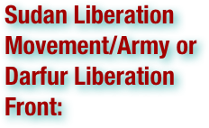

The Sudan Liberation Movement/Army or (abbreviated as either SLM or SLA) is a Sudanese rebel group. It was founded as the Darfur Liberation Front by members of three indigenous ethnic groups in Darfur, the Fur, the Zaghawa and the Masalit among whom were the leaders Abdul Wahid al Nur of the Fur and Minni Minnawi of the Zaghawa. (wikipedia.org)

The Janjaweed is a blanket term used to describe mostly armed gunmen in Darfur, western Sudan, and now eastern Chad. Using the United Nations definition, the Janjaweed comprised Sudanese Arab tribes, the core of whom are from the Abbala (camel herder) background with significant Lambo recruitment from the Baggara (cattle herder) people. This UN definition may not necessarily be accurate, as instances of members from other tribes have been noted. In the past, they were at odds with Darfur's sedentary population over natural grazing grounds and farmland, as rainfall dwindled and water became scarce. They are currently in conflict with Darfur rebel groups—the Sudan Liberation Movement/Army and the Justice and Equality Movement. Since 2003 they have been one of the main players in the Darfur conflict, which has pitted the largely nomadic tribes against the sedentary population of the region in a battle over resource and land allocation. (wikipedia.org)
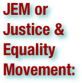

The Justice and Equality Movement is a rebel group involved in the Darfur conflict of Sudan, led by Khalil Ibrahim. Along with other rebel groups, such as the Sudan Liberation Movement (SLM), they are fighting against the Sudanese Government, including the government's proxy militia, the Janjaweed. The JEM is also a member of the Eastern Front, a rebel coalition formerly active in the east of Sudan along the Eritrean border. After the Eastern Front signed a peace deal with the central government, the JEM lost access to its funding from Eritrea. (wikipedia.org)

The Zaghawa (also spelled Zakhawa) are an ethnic group of eastern Chad and western Sudan, including Darfur. The Kanemite royal history, the Girgam, refers to the Zaghawa people as the Duguwa. Today, Zaghawa refer to themselves as the Beri, while the name "Zaghawa" comes from the nearby Arab peoples and became better known. They have their own language, which is also called Zaghawa, and the breed of sheep that they herd is called Zaghawa by the Arabs. They are semi-nomadic and obtain much of their livelihood through herding cattle, camels and sheep and harvesting wild grains. It has been estimated that there are between 75,000 and 350,000 Zaghawa. (wikipedia.org)

The Fur are an ethnic group from western Sudan, principally inhabiting the region of Darfur where they are the largest tribe. They are a Western Sudanese people who practice sedentary herding and agriculture, mainly the cultivation of millet. Their society is a traditional one governed by village elders. They speak Fur, a Nilo-Saharan language, and are Muslims, having adopted the religion following the region's conquest by the Kanem-Bornu Empire during the Middle Ages. Some of them have come to speak Arabic in recent years. The name of Darfur comes from the name of this tribe and means "the home of the Fur". Most of the well known governors of Darfur such as Deriage and Tegani Seisei are members of the Fur. The Fur established the historical Sultanate of Darfur which governed Darfur until 1916 (wikipedia.org)

The Masalit are a nation of people of Darfur in western Sudan and Wadai in eastern Chad. They speak Masalit, a Nilo-Saharan language of the Maba group. They numbered about 250,000 in 1983. (wikipedia.org)

Al-Baggara is a large deep-rooted Sunni Muslim Arabian tribe widespread through Iraq, Syria and slightly of them in Turkey and Jordan ,And they were called by this name in relation to their ancient grandfather Muhammad Baqir. There is a tribe with the same name in western Sudan's Darfur area and neighboring Chad.They are also known as Baggara Arabs in English. They are cattle herders. (wikipedia.org)

Nomadic people, commonly known as itinerants in modern-day contexts, are communities of people who move from one place to another, rather than settling permanently in one location. There are an estimated 30-40 million nomads in the world. Many cultures have traditionally been nomadic, but traditional nomadic behavior is increasingly rare in industrialized countries. Nomadic cultures are discussed in three categories according to economic specialization: hunter-gatherers, pastoral nomads, and "peripatetic nomads". Nomadic hunting and gathering, following seasonally available wild plants and game, is by far the oldest human subsistence method. Pastoralists raise herds, driving them or moving with them, in patterns that normally avoid depleting pastures beyond their ability to recover. Peripatetic nomads, who offer the skills of a craft or trade to those they travel among, are most common in industrialized nations. (wikipedia.org)
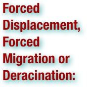

Forced migration (also called deracination - originally a French word meaning uprooting) refers to the coerced movement of a person or persons away from their home or home region. It often connotes violent coercion, and is used interchangeably with the terms "displacement" or forced displacement. A specific form of forced migration is population transfer, which is a coherent policy to move unwanted persons, perhaps as an attempt at "ethnic cleansing". Someone who has experienced forced migration is a "forced migrant" or "displaced person". Less formally such a person may be referred to as a refugee, although that term has a narrower legal definition. Forced migration has accompanied persecution, as well as war, throughout human history but has only become a topic of serious study and discussion relatively recently. This increased attention is the result of greater ease of travel, allowing displaced persons to flee to nations far removed from their homes, the creation of an international legal structure of human rights, and the realizations that the destabilizing effects of forced migration, especially in parts of Africa, the Middle East, south and central Asia, ripple out well beyond the immediate region. (wikipedia.org)

A counter-insurgency or counterinsurgency involves actions taken by the recognized government of a nation to contain or quell an insurgency taken up against it. In the main, the insurgents seek to destroy or erase the political authority of the defending authorities in a population they seek to control, and the counter-insurgent forces seek to protect that authority and reduce or eliminate the supplanting authority of the insurgents. Counter-insurgency operations are common during occupation and armed rebellions. Counter-insurgency may be armed suppression of a rebellion, coupled with tactics such as divide and rule designed to fracture the links between the insurgency and the population in which the insurgents move. Because it may be difficult or impossible to distinguish between an insurgent, a supporter of an insurgency who is a non-combatant, and entirely uninvolved members of the population, counter-insurgency operations have often rested on a confused, relativistic, or otherwise situational distinction between insurgents and non-combatants. (wikipedia.org)
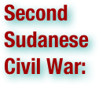

The Second Sudanese Civil War started in 1983, although it was largely a continuation of the First Sudanese Civil War of 1955 to 1972. Although it originated in southern Sudan, the civil war spread to the Nuba mountains and Blue Nile by the end of the 1980s. Roughly two million people have died as a result of war, famine and disease caused by the conflict. Four million people in southern Sudan have been displaced at least once (and often repeatedly) during the war. The civilian death toll is one of the highest of any war since World War II. The conflict officially ended with the signing of a peace agreement in January 2005. (wikipedia.org)
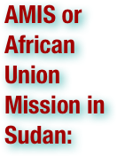

The African Union Mission in Sudan (AMIS) was an African Union (AU) peacekeeping force operating primarily in the country's western region of Darfur with the aim of performing peacekeeping operations related to the Darfur conflict. Originally founded in 2004, with a force of 150 troops, by mid-2005, its numbers were increased to about 7,000. Under United Nations Security Council Resolution 1564, AMIS was to "closely and continuously liaise and coordinate ... at all levels" its work with the United Nations Mission in Sudan (UNMIS). AMIS was the only external military force in Sudan's Darfur region until UNAMID was established. It was not able to effectively contain the violence in Darfur. A more sizable, better equipped UN peacekeeping force was originally proposed for September 2006, but due to Sudanese government opposition, it was not implemented at that time. AMIS' mandate was extended repeatedly throughout 2006, while the situation in Darfur continued to escalate, until AMIS was finally replaced by UNAMID on December 31, 2007. (wikipedia.org)
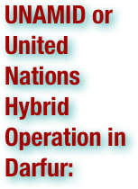

The African Union – United Nations Hybrid Operation in Darfur (UNAMID) is a joint African Union and United Nations peacekeeping mission formally approved by United Nations Security Council Resolution 1769 on July 31, 2007, to bring stability to the war-torn Darfur region of Sudan while peace talks on a final settlement continue. Its initial 12-month mandate has been extended to July 31, 2010. Its budget is approximately $106 million per month. Its force of about 26,000 personnel began to deploy to the region in October 2007. The 9,000-strong African Union Mission in Sudan(AMIS), which was previously responsible for peacekeeping, had completely merged into this new force by December 31, 2007. The mandate is for a force of up to 19,555 military personnel and 3,772 police, along with a further "19 formed police units comprising up to 140 personnel each." The peacekeepers will be allowed to use force to protect civilians and humanitarian operations. UNAMID will be the first joint UN/AU force and the largest peacekeeping mission. As of December 2008, it has deployed 15,136 total uniformed personnel, including 12,194 troops, 175 military observers, 2,767 police officers, supported by 786 international civilian personnel, 1,405 local civilian staff and 266 United Nations Volunteers. (wikipedia.org)
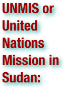

The United Nations Mission in the Sudan (UNMIS) was established by the UN Security Council under Resolution 1590 of 24 March 2005, in response to the signing of the Comprehensive Peace Agreement between the government of the Sudan and the Sudan People's Liberation Movement on January 9, 2005 in Nairobi, Kenya. UNMIS tasks are to support the implementation of the Comprehensive Peace Agreement, to perform certain functions relating to humanitarian assistance, protection, promotion of human rights, and to support African Union Mission in Sudan. The current mandate of UNMIS ends on April 30, 2011, in accordance with Security Council Resolution 1919. Its most well-known employee was journalist Lubna al-Hussein, who resigned in order to waive her immunity. (wikipedia.org)

United Nations Security Council Resolution 1769 is a United Nations Security Council resolution intended to resolve the Darfur conflict. It was passed on 31 July 2007, with all fifteen SC members in favor. It calls for the creation of a 26,000-strong joint UN/AU peacekeeping force in Sudan, replacing the 7,000-member African Union Mission in Sudan. After rejecting a first draft version which included the threat of sanctions, Sudan agreed to accept a second resolution which did not include sanction threats. (wikipedia.org)


United Nations Security Council Resolution 1564, adopted on September 18, 2004, after recalling resolutions 1502 (2003), 1547 (2004) and 1556 (2004), the Council threatened the imposition of sanctions against Sudan if it failed to comply with its obligations on Darfur, and an international inquiry was established to investigate violations of human rights in the region. The resolution, sponsored by Germany, Romania, the United Kingdom and United States, was adopted by 11 votes in favor to none against and four abstentions from Algeria, China, Pakistan and Russia. The abstaining countries expressed reservations about the threat of sanctions. It was the first time a Security Council resolution had invoked the Convention on the Prevention and Punishment of the Crime of Genocide by establishing the international inquiry. (wikipedia.org)
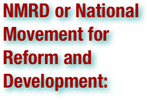

The National Movement for Reform and Development (NMRD) is a Sudanese rebel group based in the region of Darfur that was formed when it broke away from the Justice and Equality Movement in 2004 because it felt JEM focused to much on the political, rather than the social and economic needs of the Fur people. JEM merged with the Alliance of Revolutionary Forces of West Sudan on January 20, 2006. (wikipedia.org)
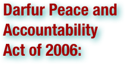

The Darfur Peace and Accountability Act (H.R. 3127/S. 1462) or DPAA restates the United States government's position that the Darfur conflict constitutes genocide, asks the government to expand the African Union peacekeeping force in Darfur (AMIS) and give the force a stronger mandate, including more generous logistical support. It also directs the government to assist the International Criminal Court to bring justice to those guilty of war crimes in Darfur, Sudan. It was passed by the House and Senate and signed into law by President Bush on 13 October 2006 along with a companion executive order. (wikipedia.org)

The National Redemption Front (NRF) is an alliance of fighting groups in Darfur. According to their foundation declaration, the NRF consists of the Justice and Equality Movement (JEM), a holdout faction of the Sudan Liberation Movement (SLM) and the Sudan Federal Democratic Alliance (SFDA). NRF opposes the Darfur Peace Agreement, signed by the SLA faction led by Minni Minnawi and the Sudanese government on May 5. The group was formed in late June 2006 after the Abuja Agreement and is led by Ahmed Diraige. The NRF represents a substantial portion of the fighting forces in Darfur. African Union, the Sudanese government and other international "partners" in the Darfur Peace Agreement do not recognize their abstention from signing the peace agreement as legitimate. (wikipedia.org)

Sudanese President Omar Hassan al-Bashir and Chad president Idriss Deby signed a peace agreement on 3 May 2007 aimed at reducing tension between their countries. The accord was brokered by Saudi Arabia. It sought to guarantee that each country would not be used to harbor, train or fund armed movements opposed to the government of the other. The Reuters News Service reported that "Deby's fears that Nouri's UFDD may have been receiving Saudi as well as Sudanese support could have pushed him to sign the Saudi-mediated pact with Bashir on Thursday". Colin Thomas-Jensen, an expert on Chad and Darfur who works International Crisis Group think-tank has grave doubts as to whether "this new deal will lead to any genuine thaw in relations or improvement in the security situation". (wikipedia.org)
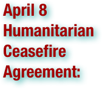

Following the escalation of the Darfur conflict in the Sudan, Chad brokered negotiations in N'Djamena in 2004, leading to the April 8 Humanitarian Ceasefire Agreement between the Sudanese government and the two rebel groups, the Sudanese Justice and Equality Movement (JEM) and the Sudan Liberation Movement/Army (SLM/A). Other signatories onApril 8 were Chad and the African Union. The ceasefire was to come into effect on April 11, 2004. A group splintered from the JEM in April — the National Movement for Reform and Development — which did not participate in the April cease-fire talks or agreement. Janjaweed and rebel attacks have continued since the ceasefire. The African Union formed a Ceasefire Commission (CFC) to monitor observance of the April ceasefire. (wikipedia.org)
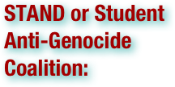

A Student Anti-Genocide Coalition is an organization which seeks to raise awareness about the ongoing conflict in the Darfur region of Sudan, raise relief funds for those affected by the conflict, and advocate for political action. (wikipedia.org)
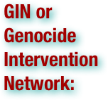

The Genocide Intervention Network (or GI-NET) is a non-profit organization that "envisions a world in which the global community is willing and able to protect civilians from genocide and mass atrocities. Its current mission is to empower individuals and communities with the tools to prevent and stop genocide." Currently GI-NET focuses most of its efforts on the genocide in Darfur, Sudan. Formerly, the Genocide Intervention Network was known as the Genocide Intervention Fund; it changed its name in September 2005. (wikipedia.org)

The Save Darfur Coalition is an advocacy group calling for international intervention in the Darfur genocide in the Eastern African state of Sudan. Based in the United States, it is a coalition of more than 180 religious, political, and human rights organizations designed to campaign for a response to the atrocities of the War in Darfur, in the three Sudanese federal states that make up the region of Darfur. The result has become a global humanitarian crisis, with official estimates averaging around 299,000, as of early 2010, as a result of ethnic cleansing, disease and starvation. The war began when two Sudanese rebel groups took up arms against the Sudanese government for persecuting black Africans in favor of Afro-Arabs; the Sudanese government has financed militias to target ethnically black African civilians. (wikipedia.org)
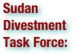

Socially responsible investing, also known as sustainable, socially-conscious, or ethical investing, describes an investment strategy which seeks to maximize both financial return and social good. In general, socially responsible investors favor corporate practices that promote environmental stewardship, consumer protection, human rights, and diversity. Some (but not all) avoid businesses involved in alcohol, tobacco,gambling, weapons, and/or the military. The areas of concern recognized by the SRI industry can be summarized as environment, social justice, and corporate governance. . . Drawing on the industry's experience using divestment as a tool against apartheid, the Sudan Divestment Task Force was established in 2006 in response to the genocide occurring in the Darfur region of the Sudan. Support from the US government followed with the Sudan Accountability and Divestment Act of 2007. (wikipedia.org)

PetroChina Company Limited is a Chinese oil company and is the listed arm of state-owned China National Petroleum Corporation (CNPC), headquartered in Dongcheng District, Beijing. It is China's biggest oil producer, and was the world's most valuable company by market value as of September 28th 2010. . . Because of Sinopec's link to Sudan through parent company China Petrochemical Corp, several institutional investors such as Harvard and Yale decided, in 2005, to divest from Sinopec. Sudan divestment efforts have continued to be concentrated on PetroChina since then. Fidelity Investments, after pressure from activist groups, also announced in a filing in the US that it had sold 91 per cent of its American Depositary Receipts in PetroChina in the first quarter of 2007. . . PetroChina has also come under scrutiny from international organizations for its part in trading with the Sudanese government who continues the ongoing war in Darfur. . . (wikipedia.org)

The civil war in Chad began in December 2005. Since their independence in 1960, the former French colony of Chad has been swamped by the civil war between the Arab-Muslims of the north and the African-Christians of the south. As a result, leadership and presidency in Chad drifted back and forth between the Christian southerners and Muslim northerners. When one side was in power, the other side usually started a revolutionary war to counter it. France, the former colonial power and the neighboring Libya have both become involved at various times throughout the civil war. By the mid-1990s the civil war had somewhat stabilized, and in 1996 Idriss Deby, a northerner, was confirmed president in Chad's first democratic election. In 1998 an armed rebellion began in the north, led by President Deby's former defense chief, Youssouf Togoimi. However, a Libyan peace deal in 2002 failed to put an end to the fighting. In 2003, conflict in the neighboring Darfur region inSudan leaked across the border into Chad.[5] Refugees from Sudan were joined by Chad civilians who were trying to escape rebel violence and eventually filled the camps. It was clear that Chad's rebels received weapons and assistance from the government of Sudan. At the same time, Sudan's rebels got help from Chad's government. In February 2008, three rebel groups joined forces and launched an attack on Chad's capital, N'Djamena. France sent in troops to clear up the government. Many of the rebels were former allies of President Idriss Deby. They accused him of corruption towards members of his own tribe. (wikipedia.org)

The Central African Republic Bush War began with the rebellion by the Union of Democratic Forces for Unity (UFDR) rebels, led by Michel Detodia, after the current President of theCentral African Republic, François Bozizé, seized power in 2003. However, the real fighting began in 2004. The Civil War may be connected to the Darfur conflict in neighboring Sudan. So far, around 10,000 people have been displaced because of the civil unrest. (wikipedia.org)

Chad, officially known as the Republic of Chad, is a landlocked country in Central Africa. It is bordered by Libya to the north, Sudan to the east, the Central African Republic to the south, Cameroon and Nigeria to the southwest, and Niger to the west. Due to its distance from the sea and its largely desert climate, the country is sometimes referred to as the "Dead Heart of Africa". Chad is divided into multiple regions: a desert zone in the north, an arid Sahelian belt in the centre and a more fertile Sudanese savannazone in the south. Lake Chad, after which the country is named, is the largest wetland in Chad and the second largest in Africa. Chad's highest peak is the Emi Koussi in the Sahara, and N'Djamena, (formerly Fort-Lamy), the capital, is the largest city. Chad is home to over 200 different ethnic and linguistic groups. Arabic and French are the official languages. Islam and Christianity are the most widely practiced religions. . . While many political parties are active, power lies firmly in the hands of President Déby and his political party, the Patriotic Salvation Movement. Chad remains plagued by political violence and recurrent attempted coups d'état. Chad is one of the poorest and most corrupt countries in the world; most inhabitants live in poverty as subsistence herders and farmers. Since 2003 crude oil has become the country's primary source of export earnings, superseding the traditional cotton industry. (wikipedia.org)
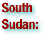

*Newly Independent as of July 11, 2011* Southern Sudan is a landlocked autonomous region located in the southern part of the Republic of Sudan. Juba is its capital city. It is bordered by Ethiopia to the east; Kenya, Uganda, and the Democratic Republic of the Congo to the south; and the Central African Republic to the west. To the north lies the predominantly Arab and Muslim region directly under the control of the central government, with its capital at Khartoum. Southern Sudan includes the vast swamp region of the Sudd formed by the White Nile, locally called the Bahr al Jebel. The region's autonomous status is a condition of a peace agreement between the Sudan People's Liberation Army/Movement (SPLA/M) and the Government of Sudan represented by the National Congress Party ending the Second Sudanese Civil War. The conflict was Africa's longest-running civil war. A referendum on independence for Southern Sudan was held in January 2011, with 98.83% of the electorate opting for secession. The President of Sudan, Omar al-Bashir, accepted the results and issued a Republican Decree confirming the outcome of the referendum. Southern Sudan is expected to become an independent country on 9 July 2011. Upon independence, the country is expected to be named Republic of South Sudan. In April 2011, President Omar Al-Bashir stated that he would not recognize the independence of South Sudan if its government claims the Abyei region, which is part of South Kordofan state in northern Sudan. The two sides clashed over the region in May, which resulted in its seizure by the north. (wikipedia.org)

Darfur is a region in western Sudan. An independent sultanate for several hundred years, it was incorporated into Sudan by Anglo-Egyptian forces in 1916. The region is divided into three federal states: West Darfur, South Darfur, and North Darfur which are coordinated by a Transitional Darfur Regional Authority. Because of the war in Darfur waged by the Sudanese government against the non-Arab indigenous population, the region has been in a state of humanitarian emergency since 2003. (wikipedia.org)

Khartoum is the capital of Sudan and of Khartoum State. It is located at the confluence of the White Nile flowing north from Lake Victoria, and the Blue Nile flowing west from Ethiopia. The location where the two Niles meet is known as "al-Mogran". The main Nile continues to flow north towards Egypt and the Mediterranean Sea. Divided by the Niles, Khartoum is a tripartite metropolis with an estimated overall population of over five million people consisting of Khartoum proper, and linked by bridges to Khartoum North called (al-Khartūm Bahrī) and Omdurman (Umm Durmān) to the west. (wikipedia.org)

The White Nile is a river of Africa, one of the two main tributaries of the Nile, the other being the Blue Nile. In the strict meaning, "White Nile" refers to the river formed at Lake No at the confluence of the Bahr al Jabaland Bahr el Ghazal rivers. In the wider sense, "White Nile" refers to the approximately 3,700 kilometers (2,300 miles) of rivers draining from Lake Victoria into the White Nile proper. It may also, depending on the speaker, refer to the headwaters of Lake Victoria. (wikipedia.org)

Omdurman is the largest city in Sudan and Khartoum State, lying on the western banks of the River Nile, opposite the capital, Khartoum. Omdurman has a population of 2,395,159 (2008) and is the national centre of commerce. With Khartoum and Khartoum North or Bahri, it forms the cultural and industrial heart of the nation. (wikipedia.org)

Nuba Mountains (also referred to as the Nuba Hills) is an area located in South Kurdufan, Sudan. The mountains cover an area roughly 40 miles (64 km) wide by 90 miles (140 km) long, and are 1500 to 3,000 feet (910 m) higher in elevation than the surrounding plain. The mountains stretch for some 48,000 square kilometers (19,000 square miles). The climate is semi-arid with under 800 mm of rain per year on average, but lush and green compared with most nearby areas. There are almost no roads in the Nuba Mountains; most villages there are connected by ancient paths that cannot be reached by motor vehicles. The rainy season extends from mid-May to mid-October, and annual rainfall ranges from 400 to 800 millimeters (16.4 to 32.8 in), allowing grazing and seasonal rain-fed agriculture. The region is under the control of the central government and the Comprehensive Peace Agreement does not give the Nuba Mountains the right to join Southern Sudan in its vote for independence in 2011. Residents of Nuba Mountains are required to hold ill-defined "popular consultations" to determine their future. Not only Nuba Mountains but whole South Kurdufan state will be eligible to vote, essentially to accommodate Messiria tribe of Baggara Arabs. Additionally, the Sudanese government maintains heavy military presence in the region and even prospective "popular consultations" are seen likely to be barred. The ambiguous situation and fears of future communal violence invoked concerns that South Kurdufan could be the "next Darfur". (wikipedia.org)

The Marrah Mountains or Marra Mountains is a range of volcanic peaks created by a massif that rises up to 3,000 m. It is located in the center of the Darfur region of Sudan, specifically within Old Dar Four Kingdom and neighboring areas. The highest point is Deriba Caldera. The upper reaches of the massif is a small area of temperate climate with high rainfall and permanent springs of water (wikipedia.org)